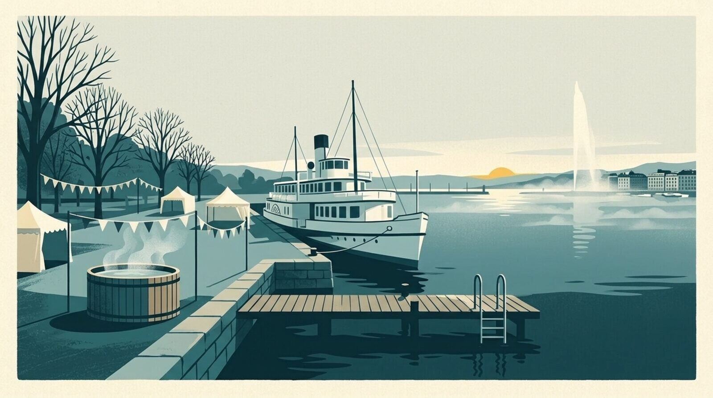

Kurz gesagt
Die 88. Coupe de Noël findet am 19. und 20. Dezember 2026 in der Genfer Rade statt: 100 Meter ab dem Jardin Anglais, in gezeiteten Serien oder verkleidet. Die Anmeldung kostet CHF 45, und laut offizieller Website ist die Ausgabe ausgebucht. Zuschauen ist gratis.
Was ist die Coupe de Noël?
Ein 100-Meter-Rennen im See, mitten im Winter, mitten in Genf. Es begann 1934: Herr Doria, Mitglied des Cercle des Nageurs de Genève, gründete es nach dem Vorbild eines Rennens auf der Seine in Paris, im ersten Jahr mit weniger als zehn Schwimmern. Der Veranstalter bezeichnet es als ältesten Sportanlass des Kantons, seit 2023 Teil des immateriellen Kulturerbes der Schweiz. Heute organisiert es die Association CdN 1934 mit Unterstützung des Sportamts der Stadt Genf.
Wann und wo?
Am Samstag, 19., und Sonntag, 20. Dezember 2026. Start ist am linken Ufer der Rade, am Swissboat-Steg beim Jardin Anglais, nahe dem Quai Marchand; das Ziel liegt rund 100 Meter weiter flussabwärts. Der erste Start erfolgt um 8.30 Uhr, danach alle 5 Minuten eine Welle; aus Sicherheitsgründen sind nie mehr als zwei Wellen (50 Schwimmende) gleichzeitig im Wasser.
Welche Kategorien?
- Gezeitete Serien (500 Plätze): Wertung nach Alter und Geschlecht, am Sonntagmorgen zwischen 8.30 und 12 Uhr. Neu 2026: eine Kategorie 70 Jahre und älter und die Trophée Gaëtan Beysard, mit einer 100-m-Welle für alle am Sonntag um 12 Uhr.
- Humoristische Serien (4000 Plätze): verkleidet, ohne Zeitmessung und ohne Rangliste. Die Verkleidung darf das Schwimmen nie behindern: Seerettung, Seepolizei und Veranstalter können den Start verweigern oder Schwimmende aus dem Wasser holen, die nicht vorankommen. Kein Konfetti.
- The Race, das Eliterennen: Sonntag, 20. Dezember, um 10 Uhr für Männer und um 10.30 Uhr für Frauen, mit Geldpreisen für die ersten fünf.
Alle Kategorien stehen Schwimmenden mit Jahrgang 2011 oder älter offen, also ab 15 Jahren.
Anmeldung und Preis
Die Anmeldung kostet CHF 45 pro Person (EUR 48), nach mehr als zehn Jahren zu CHF 40. Sie öffnete in zwei Etappen: am 26. September 2026 für die gezeiteten Serien, am 10. Oktober für die humoristischen, Zahlung per Karte oder Twint. Am 15. November 2026 meldet die offizielle Website, dass die 88. Ausgabe ausgebucht ist.
Am Renntag
- Garderoben: auf dem Schiff «Le Genève» am Quai Marchand, geheizt, aber ohne Duschen, ab 7.45 Uhr offen. Der Veranstalter rät, eine Stunde vor der eigenen Welle da zu sein.
- Callroom: wenige Schritte von den Garderoben, etwa 15 Minuten vor der Welle. Bademantel, Handtuch und Sandalen kann man dort lassen.
- Nach dem Schwimmen: ein heisser Tee, ein Erinnerungsgeschenk und ein holzbeheizter Whirlpool; Fondue, Raclette und heisse Getränke im Festdorf.
- Anreise: rund 20 Minuten zu Fuss vom Bahnhof Cornavin, 15 Minuten vom Bahnhof Eaux-Vives; Haltestellen Métropole, Place des Eaux-Vives, Rive und Molard. Der Veranstalter bittet, den öffentlichen Verkehr zu nutzen.
Wie bereitet man sich vor?
Der Veranstalter betont: Schwimmen in kaltem Wasser improvisiert man nicht. Seine Ratschläge: sich schrittweise gewöhnen, nie allein schwimmen, eine Badekappe tragen, langsam ins Wasser gehen und warten, bis sich die Atmung beruhigt, die eigenen Grenzen kennen, sich danach schrittweise aufwärmen, ohne sehr heisse Dusche, und bei Orientierungslosigkeit, unkontrolliertem Zittern oder Gefühlsverlust aus dem Wasser gehen.
Weiterlesen: die ersten 90 Sekunden im kalten Wasser, die Ausrüstung fürs Winterschwimmen, sich danach aufwärmen und Winterbaden am Genfersee.
Das Wasser des Sees im Moment
Die Wassertemperatur jedes Badeplatzes steht in der App Mein See, alle drei Stunden aktualisiert.
Hinweis. Dieser Artikel gibt allgemeine Informationen aus den genannten Quellen wieder; er ersetzt keinen ärztlichen Rat. Baden in kaltem Wasser belastet das Herz stark und kann gefährlich sein: Lass dich vor dem Beginn von einer Ärztin oder einem Arzt beraten, besonders bei Herzproblemen, Bluthochdruck oder Schwangerschaft. Geh nie allein ins Wasser und befolge die Anweisungen der Rettungsschwimmer. Du badest auf eigene Verantwortung; im Notfall wähle in der Schweiz die 144 oder die 112.